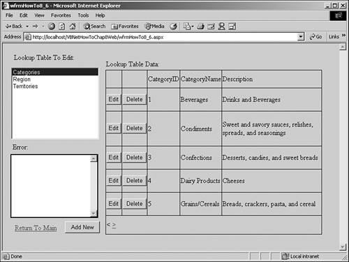

Note
A full discussion of State management in .NET and the various options is presented in Chapter 5. This also includes how to use the options for the data grid manipulation portion of this How-To. |
As with the second tutorial(8.2), this example will show you how to update multiple lookup tables-this time using a Web Form.
Creating a Web Form for viewing multiple lookup tables would take about the same if not less code than performing the same task using the Windows Form. Updating, adding, and deleting data takes a bit more work, though. This How-To will show you how to accomplish this task by using the DataGrid control and show you how to take advantage of Session variables and paging within the data grid when you're manipulating data.
The DataGrid control is a powerful control, as you saw in Chapter 5, "Working with Data on Web Forms," but when programming in Web Forms, it takes some getting used to. Because the Web Forms are stateless, you need to keep reminding the data grid what it is bound to.
Also, even though you declare a variable at the module level behind the form, you will notice that whenever the form goes back to the server for information, you lose the values of your variables. The workaround for this is the use of the Session object.
Note
A full discussion of State management in .NET and the various options is presented in Chapter 5. This also includes how to use the options for the data grid manipulation portion of this How-To. |
The other major issue with this How-To is managing the paging of the DataGrid control, covered in Chapter 4. You will quickly learn the steps of creating the Web Form that allows users to update Lookup tables.
Open and run the VB.NET -Chapter 8 solution. From the main Web Form, click on the hyperlink with the caption How-To 8.6: Use a Single Web Form for Updating Multiple Lookup Tables. Click on the first choice, Categories, in the list box labeled Lookup Table to Edit. The data grid will then appear. The grid will be filled in with the data of the table you chose. Your page will then look like the page displayed in Figure 8.9.

You can now add data into the data grid by clicking on the Add New button, located under the Error box. When you click on the Add New button, an entry is added to the data grid, and you are placed in Edit mode, shown in Figure 8.10.

After entering the data into the fields, you will click Update. The values are then saved back to the server. If you don't want to save the new entry, click the Cancel button, and the data grid makes the entry disappear.
Tip
You will notice that the look of the columns is a little congested and changes when you go to edit the data. You can avoid this by creating and using templates with the data grid. Of course, if you are using templates with the data grid, you have to change the template based on the lookup table you were using.
Tip
You will also notice that the CategoryID field has been disabled and can't be edited. This is through the use of a method, FillSchema, which fills data table with schema information from the record source. In this case, FillSchema passed on the information that the CategoryID was an AutoIncrement field, and the data grid was smart enough to handle it. |
When you click on the Edit button, the page will look similar to Figure 8.10, except that data already will be present in the fields. When you click Delete, the entry is deleted.
Any errors that might occur, such as from data integrity errors, will appear in the text box labeled Errors. If you try to delete a current category and Products uses that category, for example, then SQL Server causes an error to occur, and the page reports the error because of code created.
Create a Web Form. Then place the controls shown in Figure 8.9 with the properties shown in Table 8.8.
|
Object |
Property |
Setting |
|---|---|---|
|
DOCUMENT |
bgColor |
buttonface |
|
Label |
Name |
Label1 |
|
Text |
Lookup Table to Edit: |
|
|
ListBox |
Name |
lstLookupTables |
|
AutoPostback |
True |
|
|
Label |
Name |
Label2 |
|
Text |
Lookup Table Data: |
|
|
DataGrid |
Name |
dgLookupData |
|
AllowPaging |
True |
|
|
PageSize |
5 |
|
|
Label |
Name |
Label3 |
|
Text |
Errors: |
|
|
TextBox |
Name |
txtError |
|
ForeColor |
Red |
|
|
ReadOnly |
True |
|
|
TextMode |
MultiLine |
|
|
Button |
Name |
btnAdd |
|
Text |
Add New |
|
|
HyperLink |
Name |
hplReturnToMain |
|
NavigateURL |
wfrmMain.aspx |
On the newly created lstLookupTables ListBox control, click the Build button next to the Items property, which is a collection of names of the lookup tables to edit. After you have clicked the Build button, the ListItem Collection Editor opens. Enter the values Categories, Regions, and Territories, as shown in Figure 8.11. Click OK to accept the entries.
Tip
To make this truly data driven, you could have these entries in a table in your database. Then you could point the DataSource property of the list box to the table. You could also have the table contain the names of the templates you wanted to use. A different approach was taken here so that you would not have to modify your copy of the Northwind database. |
On the dgLookupData DataGrid control, click the Build button next to the Columns property. You will then be brought into the Columns tab of the dgLookupData Properties dialog box. Click on the plus sign by the Button column in the Available Columns list. You will then see the list of available button types you can use. Select the Edit, Update, Cancel, and Delete buttons. Set each of these buttons to have the PushButton button type. After you have made these selections, the dialog box will look like Figure 8.12. Click OK to accept the entries.
Now that you have added some buttons to the DataGrid control, you still have to tell the control how to react to the buttons. You will do that using events in code, but we need to add some tags to the HTML. The tags you will add are as follows:
OnUpdateCommand="dgLookupData_Update" OnCancelCommand="dgLookupData_Cancel" OnEditCommand="dgLookupData_Edit" OnDeleteCommand="dgLookupData_Delete"
Click on the HTML tab of the Web Form in Visual Studio. Then you can see the HTML and insert the tags. By looking at the HTML shown in Figure 8.13, you can see where to put the tags. Of course, your HTML won't be as nicely laid out as this figure because Visual Studio scrunches it up.
Now it's time for the code. The first items to add are the code for the module level DataTable object variable declaration and the code that you want to add for the Load event of the page. Both are shown in Listing 8.32. The load event tests for the Session variable MyLookupData; if the variable exists, the event creates a reference to the data table using the mdtLookupData DataTable object.
Private mdtLookupData As New DataTable()
Private Sub Page_Load(ByVal sender As System.Object, _
ByVal e As System.EventArgs) Handles MyBase.Load
'Put user code to initialize the page here
If Not (Session("MyLookupData") Is Nothing) Then
mdtLookupData = CType(Session("MyLookupData"), DataTable)
End If
End Sub
Add the code in Listing 8.33 to the SelectedIndexChanged event of lstLookupTables. This code starts off by clearing the txtError TextBox control that is used to store the Exception object's Message property that is caught later in the routine. Next, the odaLookupData DataAdapter object is built by creating a SQL Select statement from the currently selected table in lstLookupTables.
Now it's time to fill in the dtNew DataTable object, which is done using FillSchema and Fill. You have seen the Fill method before. FillSchema tells .NET to do just that-return the Schema to the data table, thus having your DataTable object use properties such as AutoIncrement, DataTypes, and even Constraints.
Next, the code reassigns the mdtLookupTable reference to point to dtNew. This works well for using the DataTable and DataGrid objects with different tables, which not only clears the data, but also resets what columns are being used in the data table object.
You can see that mdtLookupData is being stored to a Session object entry called MyDataTable, and a Boolean variable called IsAdding is set to False. This last variable will be set to True when the btnAdd is clicked and used for special handling when updating and canceling the editing of the data grid.
Tip
You really need to watch where you are storing values to the Session object and other state management objects. Make sure you do store these objects before calling methods or accessing properties of server controls such as the DataGrid control. |
Next, the EditItemIndex property is set to -1 to unselect any item that is being edited. Then the CurrentPageIndex property is reset to 0 to reflect the first page in the data grid.
The data grid is then filled and the subroutine BindTheGrid() is called. You can find this subroutine at the bottom of the listing. This routine sets the DataSource property of the DataGrid control to mdtLookupData and calls the DataBind method of the DataGrid control.
Private Sub lstLookupTables_SelectedIndexChanged(ByVal sender As System.Object,
ByVal e As System.EventArgs) _
Handles lstLookupTables.SelectedIndexChanged
Dim odaLookupData As OleDb.OleDbDataAdapter
Dim dtNew As New DataTable()
Me.txtError.Text = ""
Try
'-- Take the txtSQLString text and create a data table; then set the
' data source of the data grid.
odaLookupData = New OleDb.OleDbDataAdapter("Select * From " & _
Me.lstLookupTables.SelectedItem.ToString,
BuildCnnStr("(local)", "Northwind"))
'-- Test for identity and display any other notes.
odaLookupData.FillSchema(dtNew, SchemaType.Source)
'-- Get the data and put it in the data table.
odaLookupData.Fill(dtNew)
'-- Save the data table to a session variable so that
' you don't lose it on a trip back to the server.
' Set the flag for adding new records to False.
Session("IsAdding") = False
Session("MyLookupData") = dtNew
mdtLookupData = dtNew
Me.dgLookupData.EditItemIndex = -1
Me.dgLookupData.CurrentPageIndex = 0
'-- Bind the data grid to the data table
BindTheGrid()
Catch excp As Exception
'-- If an error occurs, stash the error message to a text box.
Me.txtError.Text = excp.Message
End Try
End Sub
Sub BindTheGrid()
'-- Bind the data grid
Me.dgLookupData.DataSource = mdtLookupData
Me.dgLookupData.DataBind()
End Sub
Add the code in Listing 8.34 to the Edit command of dgLookupData. This is one of the events specified in step 4. This code sets the EditItemIndex of the DataGrid object to the selected item and then binds the data.
Sub dgLookupData_Edit(ByVal sender As Object, _
ByVal e As DataGridCommandEventArgs)
'-- The data grid does most of the work; just set the EditItemIndex
' to the ItemIndex and bind the grid again.
Me.txtError.Text = ""
dgLookupData.EditItemIndex = e.Item.ItemIndex
BindTheGrid()
End Sub
Add the code in Listing 8.35 to the Click event of btnAdd. Notice that the first task invokes the BeginLoadData method for mdtLookupData. This turns off the schema checking that will occur when adding the new row to the DataTable object. You need to turn this off because you don't want to have it check for required fields until you actually edit the record. The editing of the record is started by the line of code setting the EditItemIndex property of the DataGrid object.
The GetPageNum() routine helps to synchronize the DataGrid page with the position the pointer is in the DataTable object. If you add a record, you have to know whether to have it be on the current page or on a new page in the data grid. You can see GetPageNum after btnAdd_Click in Listing 8.35.
GetPageRows(), found at the bottom of Listing 8.35, returns the number of actual rows based on the page in the data grid.
Note
GetPageRows() returns the current page number (dgLookupData.CurrentPageIndex) times the page size (dgLookupData.PageSize). In this case, GetPageRows() returns 5, as set in step 1. If EditItemIndex were used alone, it would return only the position of the item that was being edited for the current page. |
Last, the EditItemIndex of dgLookupData is set. The data grid is bound to the data table using the BindTheGrid routine.
Private Sub btnAdd_Click(ByVal sender As System.Object, _
ByVal e As System.EventArgs) Handles btnAdd.Click
Dim intColCnt As Integer
Dim drCurr As data row
Me.txtError.Text = ""
mdtLookupData.BeginLoadData()
'-- Add the row to the data table via the data row
drCurr = mdtLookupData.NewRow
mdtLookupData.Rows.Add(drCurr)
'-- Set the Adding flag.
Session("MyLookupData") = mdtLookupData
Session("IsAdding") = True
'-- Set the current page based on the new number of rows
dgLookupData.CurrentPageIndex = GetPageNum(mdtLookupData)
'-- Set the item index based on the rows on this page only.
dgLookupData.EditItemIndex = mdtLookupData.Rows.Count - _
GetPageRows() - 1
BindTheGrid()
End Sub
Function GetPageRows() As Integer
'-- This helps synchronize the data table rows
' with the DataGrid page and row.
GetPageRows = dgLookupData.PageSize * dgLookupData.CurrentPageIndex
End Function
Function GetPageNum(ByVal dt As data table) As Decimal
Dim decTemp As Decimal
'-- Calculate the number of pages
decTemp = ((dt.Rows.Count - 1) / dgLookupData.PageSize)
GetPageNum = decTemp.Truncate(decTemp)
End Function
Add the code shown in Listing 8.36 to the Cancel command of dgLookupData. This is one of the events specified in step 4. If the code is in the middle of adding an entry, it uses the EditItemIndex of the DataGrid object to the selected item and adds this to the value returned by GetPageRows(), shown just after the dgLookupData_Cancel subroutine.
The value that EditItemIndex and GetPagerows() returns is used to position the pointer in mdtLookupData so that the Delete method can be called.
After accepting the changes, the session variables are resaved. Then the page index for the DataGrid object is cleaned up by comparing the current page number relative to the pointer of the data table position to the CurrentPageIndex property. Regardless of whether the item is being added or edited, the EditItemIndex is cleared by setting it to -1. The data grid is bound again by calling BindTheData().
Sub dgLookupData_Cancel(ByVal sender As Object,
ByVal e As DataGridCommandEventArgs)
Dim blnAdding As Boolean
'-- If you're canceling while adding a record, you need to back the
' row out of the data table and data grid.
' You don't have to send it to the
' server because it really was never added to it.
Me.txtError.Text = ""
If CType(Session("IsAdding"), Boolean) Then
mdtLookupData.Rows(dgLookupData.EditItemIndex + _
GetPageRows()).Delete()
mdtLookupData.AcceptChanges()
Session("IsAdding") = False
Session("MyLookupData") = mdtLookupData
'-- Reset the paging if it has been affected
If GetPageNum(mdtLookupData) < dgLookupData.CurrentPageIndex Then
dgLookupData.CurrentPageIndex -= 1
End If
End If
dgLookupData.EditItemIndex = -1
BindTheGrid()
End Sub
Add the code in Listing 8.37 for the Delete command of dgLookupData. This is one of the events specified in step 4. This code is a lot like the code in the previous step when the record was added. The big difference in this step's code listing is that the deletion is posted back to the server, and in the previous step, it wasn't. It wasn't posted back to the server in the previous step because the server never knew anything about the record. The record had only been added to the data table and was not sent back to the server. You can see that in the next step.
Another item to note is the RejectChanges method called in the Catch of the exception handling code. If an error occurs, the change is undone, the message is noted, and life goes on. The rest of this code pretty closely follows what was done in the previous step.
Sub dgLookupData_Delete(ByVal sender As Object, _
ByVal e As DataGridCommandEventArgs)
Dim intColCnt As Integer
Dim cnn As New OleDb.OleDbConnection(BuildCnnStr("(local)", _
"Northwind"))
'-- Create the command builder to update (post) the data
' in the data grid
' back to the server.
Dim odaTableData As OleDb.OleDbDataAdapter
Me.txtError.Text = ""
Try
'-- Take the txtSQLString text and create a data table. Then set the
' data source of the data grid.
odaTableData = New OleDb.OleDbDataAdapter("Select * From " & _
Me.lstLookupTables.SelectedItem.ToString, cnn)
Dim ocbTableData As OleDb.OleDbCommandBuilder = _
New OleDb.OleDbCommandBuilder(odaTableData)
'-- Delete the row from the data table.
mdtLookupData.Rows(e.Item.ItemIndex + GetPageRows()).Delete()
'-- Commands are necessary to actually post back to the server.
cnn.Open()
odaTableData.Update(mdtLookupData)
mdtLookupData.AcceptChanges()
cnn.Close()
Session("MyLookupData") = mdtLookupData
Session("IsAdding") = False
'-- This is just in case they were editing and press Delete, Clear.
dgLookupData.EditItemIndex = -1
'-- Adjust the page according to the number of rows.
If GetPageNum(mdtLookupData) < dgLookupData.CurrentPageIndex Then
dgLookupData.CurrentPageIndex -= 1
End If
Catch excp As Exception
Me.txtError.Text = excp.Message
mdtLookupData.RejectChanges()
End Try
BindTheGrid()
End Sub
Add the code in Listing 8.38 for the Update command of dgLookupData. This is one of the events specified in step 4. This routine starts off by declaring DataAdapter and CommandBuilder objects to update your data back to the server. Before the actual update, however, the current row that is being edited in the data grid is assigned to a DataRow object. Then each of the items in the row is saved from the data grid cells to the column in the data row.
Thanks to using the FillSchema method when filling the data table, the AutoIncrement property will reflect whether a column was an Identity column. If the FillSchema method were not used, you would have to handle the exception that would occur when you tried to write the value to the column.
When writing the cells into the columns in the data row, the Trim function is used; because of using the FillSchema method, the values are padded out as SQL Server columns generally are.
The rest of the code pretty well runs like it does in step 9. The changes are accepted, written back to the server, and so forth.
Sub dgLookupData_Update(ByVal sender As Object, _
ByVal e As DataGridCommandEventArgs)
Dim intColCnt As Integer
Dim intColCurr As Integer
Dim drCurr As DataRow
Dim cnn As New OleDb.OleDbConnection(BuildCnnStr("(local)", _
"Northwind"))
Dim blnAdding As Boolean
Dim strCurrValue As String
'-- Create the command builder to update (post) the data
' in the data grid
' back to the server.
Dim odaTableData As OleDb.OleDbDataAdapter
Me.txtError.Text = ""
Try
'-- Take the txtSQLString text and create a data table. Then set the
' data source of the data grid.
odaTableData = New OleDb.OleDbDataAdapter("Select * From " & _
Me.lstLookupTables.SelectedItem.ToString, cnn)
Dim ocbTableData As OleDb.OleDbCommandBuilder = _
New OleDb.OleDbCommandBuilder(odaTableData)
drCurr = mdtLookupData.Rows(dgLookupData.EditItemIndex + _
GetPageRows())
'-- Update the fields in the rows.
intColCnt = e.Item.Cells.Count
For intColCurr = 2 To intColCnt - 1
If mdtLookupData.Columns(intColCurr - 2).AutoIncrement = _
False Then
drCurr.Item(intColCurr - 2) = _
Trim(CType(e.Item.Cells(intColCurr).Controls(0), _
TextBox).Text)
End If
Next
'-- Commands are necessary to actually post back to the server.
cnn.Open()
odaTableData.Update(mdtLookupData)
mdtLookupData.AcceptChanges()
cnn.Close()
Session("MyLookupData") = mdtLookupData
Session("IsAdding") = False
dgLookupData.EditItemIndex = -1
BindTheGrid()
Catch excp As Exception
Me.txtError.Text = excp.Message
End Try
End Sub
Add the code in Listing 8.39 for the PageIndexChanged command of dgLookupData. This code simply sets the CurrentPageIndex property of the data grid to the page that is chosen. The code then calls BindTheGrid().
Private Sub dgLookupData_PageIndexChanged(ByVal source As Object,
ByVal e As System.Web.UI.WebControls.DataGridPageChangedEventArgs)
Handles dgLookupData.PageIndexChanged
'-- Set the current page in the data grid.
Me.dgLookupData.CurrentPageIndex = e.NewPageIndex
BindTheGrid()
End Sub
When the form opens, the user clicks on an entry in the Lookup Table to Edit list box. When this occurs and when a user selects a new item in the list, a Select statement is generated and loaded into a data adapter, which fills a data table. This, in turn, is used for the data source of the data grid, and the DataBind method is called. The data is then displayed.
If the user clicks on the Edit button, the controls in the data grid are put into Edit mode. If the user clicks the Add button, a data row is added to the data table, and the data grid reflects this, including handling the paging of row locations.
When the user clicks the button with the caption Update, a CommandBuilder object is generated off the DataAdapter object. The Update command for the data adapter is then invoked, with the Update method called. The data table is then referenced from the data source of the data grid control, and the AcceptChanges method is called. If the user clicks Cancel, then the changes are ignored if a record is being edited, but the data row is deleted if the record was in the middle of being added.
When the user clicks Delete, the DataAdapter and CommandBuilder objects are created to remove the data row from the data table and reflect the changes back to the server. The data grid is also re-bound to the data table, and the paging is adjusted.
Whew, this was a long one. The good news is that the code is already created for you with the book. Remember, though, as with other techniques and examples, this is a starting point for you to run with and expand on. This example doesn't provide all the error trapping that is necessary, but it definitely gives a good start.
Before spending too much time enhancing this example, make sure you get the performance out of it, just as you should when trying different data-driven techniques.